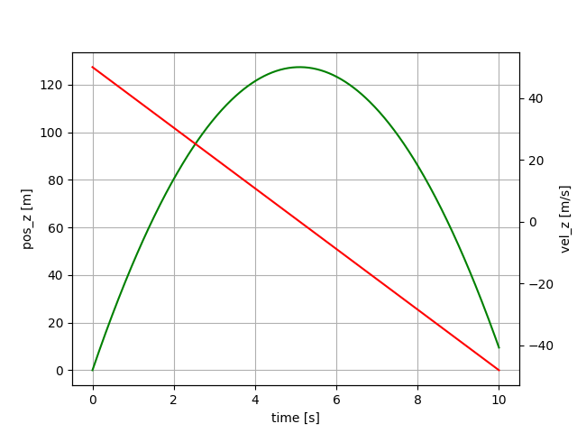

Tethers.jl

Introduction
A few examples where tether models can be useful:
- cranes
- undersea cables
- mooring lines of floating wind turbines
- airborne wind energy systems
- launching of sailplanes
Modeling of tethers and cables is difficult for several reasons. One of them is the high stiffness of the equation systems that need to be solved. I tried to implement these models with Simulink and Modelica and failed. It is possible to implement these models with Julia or Python. How to do this is explained in this tutorial. Tethers that are reeled in and out from a winch are even more challenging to model than constant-length tethers.
A series of examples, from a simple falling mass towards a tether model, consisting of point masses connected by spring damper elements with the support of reel-out and reel-in and aerodynamic drag attached shall be presented.
– WORK IN PROGRESS –
Installation
- make sure you are running a
bashterminal (shell) and you have at least 16GB RAM (MAC, Linux and Windows supported). On Windows, you can use git for windows which provides git AND a bash shell, but for using Julia from abashterminal you must also install either Installation and usage of VSCode or Windows Terminal.Windows Terminalis the simple and clean solution,VSCodethe comfortable, fancy solution. - install Julia 1.10 using
juliaup, see https://github.com/JuliaLang/juliaup. Ifjuliaupis already installed, the following commands will do:
juliaup add 1.10
juliaup default 1.10 Check out from git:
cd repos # any folder of your choice, but without spaces in the folder name
git clone https://github.com/ufechner7/Tethers.jlBuild the system image:
cd repos/Tethers.jl
cd bin
./create_sys_imageBasic example
Use the provided script to start Julia from the Tethers.jl folder:
cd repos/Tethers.jl
./bin/run_juliaFrom the Julia prompt, run the simulation:
include("src/Tether_01.jl")You should see a plot similar to:

This example shows a mass that is thrown upwards, slows down and then falls.
Julia code: Tether_01.jl
These differential equations define the model:
D = Differential(t)
eqs = vcat(D.(pos) ~ vel,
D.(vel) ~ acc,
acc .~ G_EARTH)The term D.(pos) means "Apply the differential D(t) to all elements of the vector pos". The second term defines that the differential of the velocity vector must be equal to the acceleration. For equality in symbolic equations the character ~ has to be used, because the character = has the meaning "assign a value to a variable" which is not what we are doing here. The third equation means that all elements of the acceleration vector must be equal to the elements of the gravity vector. We end up with an array of 3x3` equations.
The next lines are:
@named sys = ODESystem(eqs, t)
simple_sys = structural_simplify(sys)This means we create a named ordinary equation system, depending on t. Then we simplify the system symbolically (order reduction). If you type sys in the Julia REPL (command line) you can see that the original system had 9 equations, the second line above created a system with only six equations. This step helps to speed up the simulation and often also removes algebraic loops which makes the ODE a lot simpler to solve numerically later on.
Now the parameters of the integrator are defined:
duration = 10.0
dt = 0.02
tol = 1e-6
tspan = (0.0, duration)
ts = 0:dt:durationThe time step $dt$ is the interval in which the solution shall be stored, NOT the time step of the integrator. The integrator uses a variable time step which can be much smaller or much larger as determined by the required tolerance, in this example set to $tol=10^{-6}$. The variable $ts$ is a range object defining the sampling times for the result.
Then we define the initial condition $u0$. We use a dictionary of variable => value pairs to do this. In the next line, we define the ODE problem and finally, we solve it using the Rodas5 solver with the given parameters.
u0 = Dict(vel=>[0, 0, 50.0])
prob = ODEProblem(simple_sys, u0, tspan)
@time sol = solve(prob, Rodas5(), dt=dt, abstol=tol, reltol=tol, saveat=ts)The macro @time measures the compilation and execution time of calling the function solve(). It is compiled only when called the first time.
Python version as comparison
From the Julia prompt execute:
include("src/RunTether.jl")This will install Python, Matplotlib and Assimulo and execute the script Tether_01.py.
Python code: Tether_01.py
If you compare the Python and the Julia scripts you can see that:
- the Julia script is shorter and easier to read
- Julia is about 16 times faster when running the simulation
Have a look at the Examples that teach you how to construct a full tether model step by step.
Overall comparison
Execution time for a simulation of 10s duration with logging the state every 20ms. Relative and absolute tolerance: $1.0^{-6}$. CPU: Ryzen 9 7950X.
| Test-case | Lines of code (LOC) Julia | LOC Python | Time Julia [ms] | Time Python [ms] |
|---|---|---|---|---|
| Falling mass | 42 | 56 | 0.17 | 2.6 |
| Non-linear Spring damper | 61 | 83 | 0.61 | 20 |
| dito with callbacks | 68 | 103 | 0.74 | 31 |
| swinging tether, 5 segments | 122 | 150 | 3.50 | 47 |
| Dyneema tether, reeling out | 136 | 20 |
Tradeoff Julia vs Python: In Julia, the code is compiled before it is executed, which can cause about one to 10 seconds delay when running a simulation the first time, but speeds up the execution a lot afterward. In addition, Julia can run fully multithreaded, Python cannot make use of multiple CPU cores with multithreading because of the global interpreter lock.
See also: Why Julia? and read the documentation.